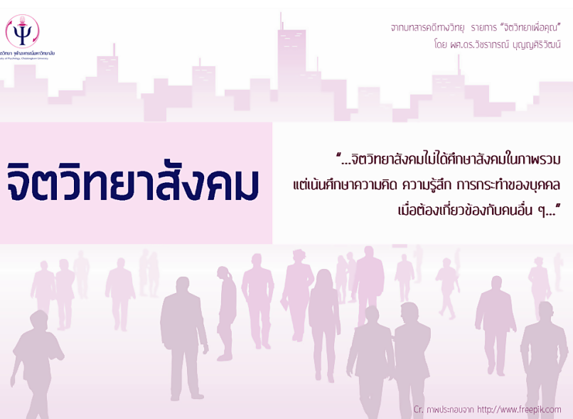
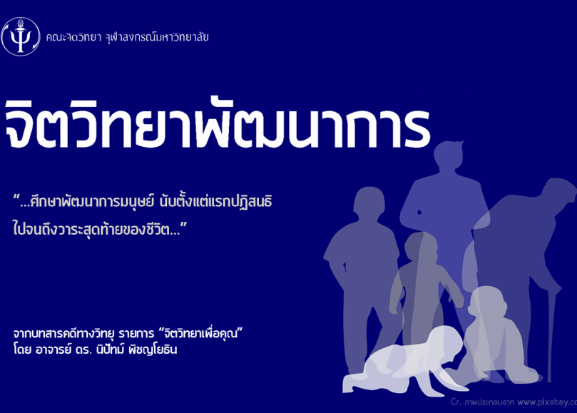
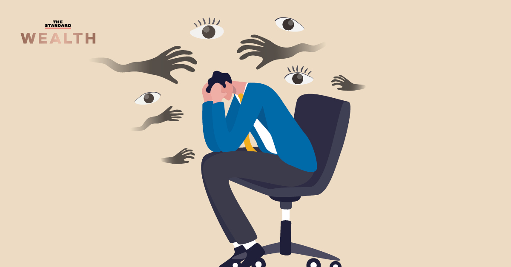
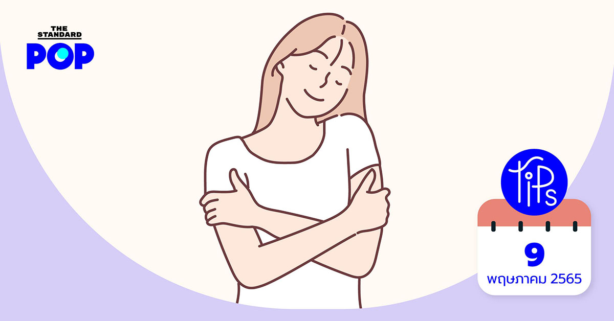
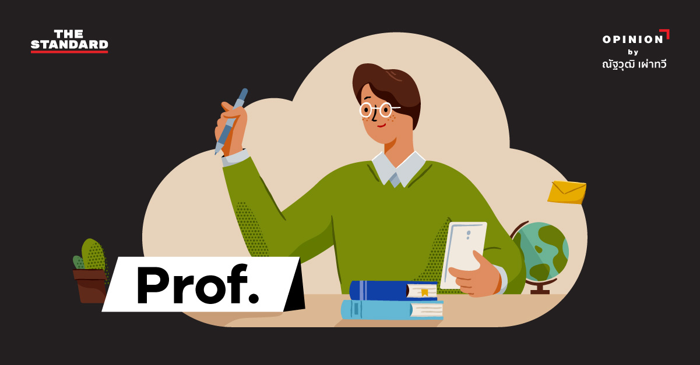
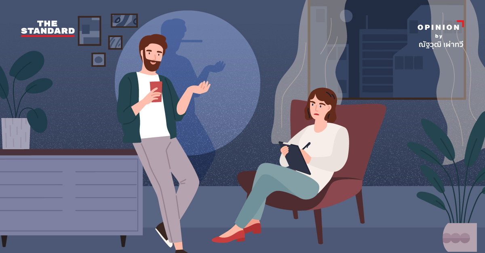
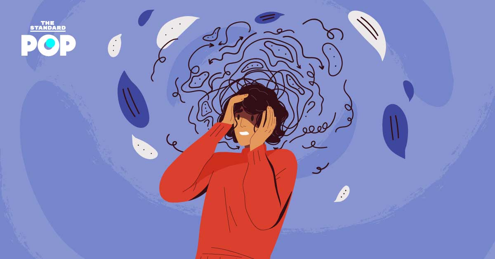

บทความ
11-02-2023
"จิตวิทยาพัฒนาการ” คือ
ศาสตร์แห่งการเข้าใจมนุษย์โดยใช้องค์ความรู้เรื่องพัฒนาการมนุษย์มาช่วยอธิบาย

12-02-2023
"จิตวิทยาสังคม” หรือ “Social
Psychology”เป็นจิตวิทยาสาขาหนึ่งในหลากหลายสาขาทางจิตวิทยาโดยจุดเน้นของจิตวิทยาสังคมคือ
การศึกษาพฤติกรรม

13-02-2023
“จิตวิทยาการปรึกษา” หรือในภาษาอังกฤษใช้คำว่า Counseling Psychology
นั้นเป็นศาสตร์หนึ่งด้านจิตวิทยาที่
มุ่งเน้นในการให้บริการแก่บุคคลทั่วไป

13-02-2023
ได้ครับพี่-ดีครับผม-เหมาะสมครับท่าน! รู้จัก ‘People Pleaser’ ประเภทของคนที่เอาอกเอาใจคนอื่น แต่ฝืนใจตัวเอง
14-02-2023
Perfectionist กับดักความสมบูรณ์แบบที่อาจแปรเปลี่ยนเป็นความกลัวและวิตกกังวลจนไม่ได้ลงมือทำ

14-02-2023
POP TIP: จิตวิทยาแห่งการกอด ช่วยบำบัดอารมณ์ความรู้สึกให้ดีขึ้น และลดความเครียดได้ด้วย

15-02-2023
‘เพราะไม่มั่นคงจึงต้องอวด’ ไขความลับของคนชอบอวดสถานะ

16-02-2023
วิธีจับโกหกของคนพูดอย่างทำอย่าง คำพูดแบบไหนส่อแววกลับกลอกมากที่สุด

17-02-2023
ทำอย่างไรเมื่อความกังวลกำลังส่งผลให้กลายเป็น ‘อาการกังวล’ (Anxiety)